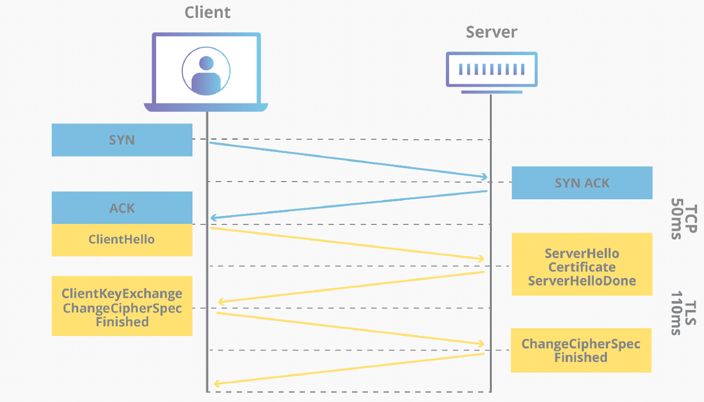

TLS (Transport Layer Security) jedná se o kryptografický protokol SSL (Secure Sockets Layer) je jeho předchůdcem a mají za úkol poskytnou bezpečnou komunikaci přes internet. Tento protokol je velmi používaný ve službých jako jsou email, VOIP (voice over ip), HTTPS. Samotné SSL se již moc nepoužívá jen v některých zastaralých aplikacích. Moderní svět postupně přešel na TLS.
TLS se zaměřuje na poskytování securitz, including privacy (confidentiality), integrity a ověřování použitím cryptography, jako jsou například certifikáty, mezi dvěma nebo více aplikacemi.
TLS VS SSL
SSL
TLS
SSL stands for Secure Socket Layer.
TLS stands for Transport Layer Security.
SSL supports the Fortezza algorithm.
TLS does not support the Fortezza algorithm.
SSL is the 3.0 version.
TLS is the 1.0 version.
In SSL the Message digest is used to create a master secret.
In TLS a Pseudo-random function is used to create a master secret.
In SSL, the Message Authentication Code protocol is used.
In TLS Hashed Message Authentication code protocol is used.
SSL is more complex than TLS
TLS is simple.
SSL is less secured as compared to TLS
TLS provides high security.
SSL is less reliable and slower.
TLS is highly reliable and upgraded. It provides less latency.
SSL has been depreciated
TLS is still widely used.
SSL uses port to set up explicit connection.
TLS uses protocol to set up implicit connection.
TLS Handshake

Proc probiha TLS handshake
Urceni jaka verze TLS se bude pouzivat (TLS 1.0, 1.2, 1.3, etc.)
Urcuji jaky cipher suite se bude pouzivat
Cipher suite je skupina algoritmu ktera vytvari sifrovane komunikacni spojeni
Key exchange algorithm, a bulk encryption algorithm and a message authentication code (MAC) algorithm
Autentifikace identity za pomoci server public key a SSL certifikatu schvaleneho autoritou
Generuji session key za ucelem symetrickeho sifrovani pote co handshake probehne Prubeh handshake bude zaviset na tom jaky key exchange algoritmus se bude pouzivat a jaky cipher suite podporuji obe dve strany. Vsechny TLS handshaky vyuzivaji asymetricke sifrovani pro komunikaci
Postup komunikace
The 'client hello' message: Klient zapocina handshake tim ze posila "hello" message server. Message obsahuje jakou TLS verzi klient podporuje, jakou cipher suite klient podporuje a retezec nahodnych bajtu "client random".
The 'server hello ' message: Jako odpoved na klientovo "hello" server posila message obsahujici jeho SSL certifikat, server podporovany cipher suite a "server random", znovu nahodne vygenerovany tentokrat serverem
Authentication: Klient overi SSL certifikat za pomoci certifikacni autority ktera ho pouziva. Tim potvrdi svoji totoznost a trustworthy server.
The premaster secret: Klient posila jeden dalsi nahodny retezec bajtu... "premaster secret". "Premaster secret" je sifrovany pomoci public key a muze byt desifrovany za pomoci private key ktery ma server. (Public klic dostane z ssl certifikatu)
Private key used: Server desifruje "Premaster secret"
Session keys created: Oba klient i sever vygeneruji session key z "client random", "server random" a "Premaster secret", Meli by dojit ke stejnemu vysledku
Client is ready: Klient posle "finished" message ktera je zasifrovana pomoci session key.
Server is ready: Server posle "finished" message zasifrovanou pomoci session key.
Secure symmetric encryption achieved: Handshake je u konce, komunikace muze pokracovat kde se bude vyuzivat session key pro symetricke sifrovani
Symetricke a Asymetricke sifrovani
Principem šifrování je převod čitelných dat na nečitelná data. Zpětný převod z nečitelných dat na čitelná data se nazývá dešifrování. Šifrovat mohu jak data, která si chci ponechat na svém zařízení (aby si je nemohl přečíst případný útočník, který se jich zmocní), tak především data, která chci zaslat někomu dalšímu (šance na zachycení dat přenášených přes Internet je poměrně vysoká – šifrováním zajistím, že zachycená data nebude možné zneužít).
Symetricke
Různé techniky šifrování stojí na odlišných matematických základech, ale většina z nich pracuje se šifrovacími klíči. V případě symetrického šifrování se tentýž klíč používá jak pro šifrování, tak i pro dešifrování. Postup symetrického šifrování je poměrně jednoduchý. Odesílatel a příjemce se nejprve domluví na klíči, tedy na sekvenci znaků (nejlépe bez reálného významu). Odesílatel zprávu zašifruje, zašle ji příjemci a ten si ji dešifruje.
Asymetricke
Slabinu symetrického šifrování – tedy nutnost sdílení šifrovacího klíče – řeší asymetrické šifrování. Při něm se používají dva klíče – jeden pro šifrování a druhý pro dešifrování. Chce-li odesílatel poslat příjemci zašifrovanou zprávu, tak nejprve odesílatel požádá příjemce o jeho šifrovací klíč. Tímto klíčem zašifruje zprávu a odešle ji. Příjemce si pak zprávu svým dešifrovacím klíčem dešifruje. Znalost pouhého šifrovacího klíče neumožňuje dešifrování zpráv, a tak je možné tento klíč bez rizika poslat i přes běžné nezabezpečené připojení. Tomuto klíči se proto říká veřejný klíč. Dešifrovací klíč je naproti tomu potřeba uchovat v tajnosti – říká se mu proto soukromý klíč.
RSA (inicialy Rivest-Shamir-Adleman)
Jeden z nejstarších public-key kryptografických systémů, který se používá pro bezpečný přenos dat. V tomto algoritmu je šifrovací klýč public a liší se od dešifrovacího. Používá se i dnes, přičemž při dostatečné délce klíče je považován za bezpečný. Je založen na principu že je složité rozložit velké číslo na součin prvočísel. Naproti tomu násobení dvou velkých čísel je elementární úloha.
Certifikacni autorita
Certifikační autorita (zkratka CA) je v asymetrické kryptografii subjekt, který vydává digitální certifikáty ( elektronicky podepsané veřejné šifrovací klíče), čímž usnadňuje využívání PKI (Public Key Infrastructure) tak, že svojí autoritou potvrzuje pravdivost údajů, které jsou ve volně dostupném veřejném klíči uvedeny. Na základě principu přenosu důvěry (viz níže) tak můžeme důvěřovat údajům uvedeným v digitálním certifikátu za předpokladu, že důvěřujeme samotné certifikační autoritě. Certifikát autorita podepisuje za pomocí privátního klíče. Následně pak když si chci ověřit že je podpis důvěryhodný porovnám ho s publik key který už v dnešní době mohou být přímo v prohlížeči. Vše zpočívá na důvěře v Certifikační autoritu když chceme zjistit validitu SSL certifikátu.
Stahování certifikačních řetězců: Spolu s certifikátem obdržíte také certifikační řetězce. Certifikační řetězec obsahuje certifikát vydávající autority (tzv. kořenové certifikáty), které jsou považovány za důvěryhodné. Prohlížeč potřebuje tyto kořenové certifikáty, aby mohl ověřit důvěryhodnost certifikátu, který jste obdrželi.
Verifikace digitálního podpisu: Prohlížeč zkontroluje platnost digitálního podpisu na certifikátu. Proces zahrnuje ověření, zda digitální podpis byl vygenerován pomocí privátního klíče vydávající autority, a zda je certifikát platný.
Kontrola důvěryhodnosti vydávající autority: Prohlížeč zkontroluje, zda je vydávající autorita, která podepsala certifikát, uvedena v certifikačním řetězci a zda je považována za důvěryhodnou. Pokud je vydávající autorita důvěryhodná, prohlížeč přijme certifikát jako důvěryhodný